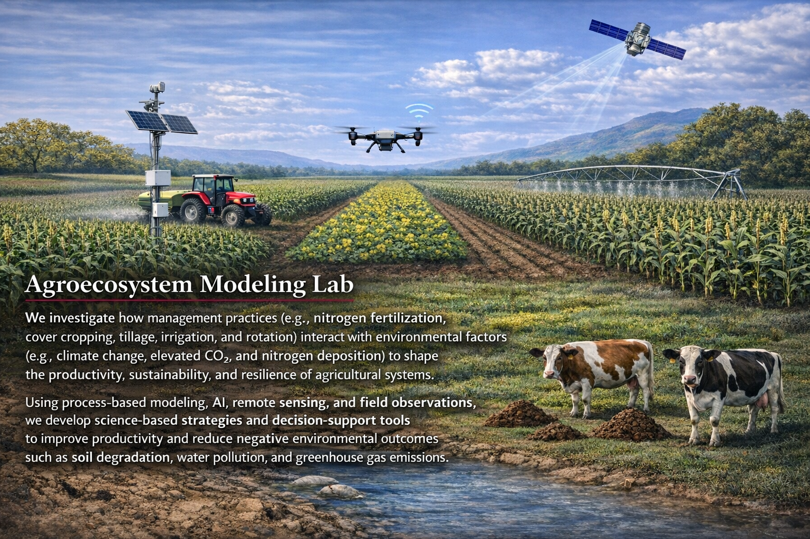
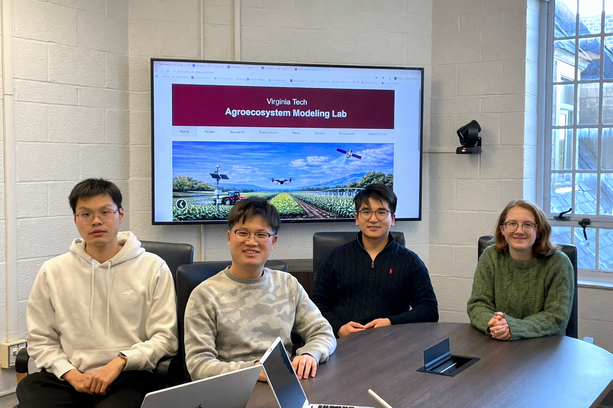
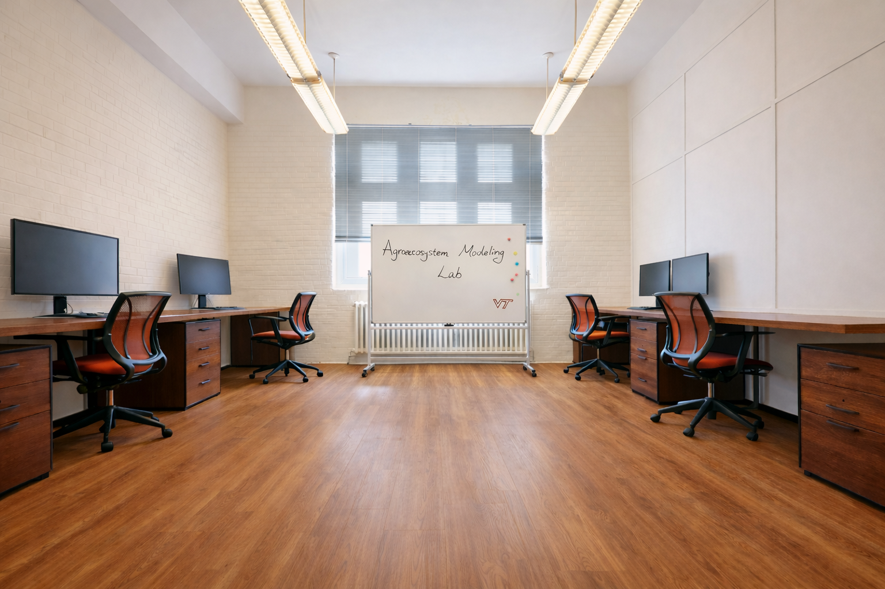
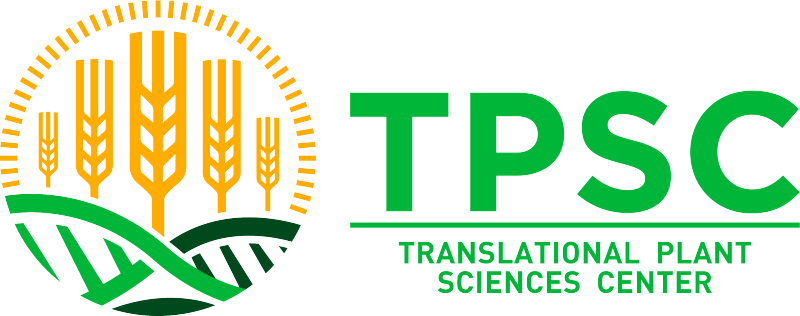

Welcome to the Agroecosystem Modeling Lab at Virginia Tech

Group Photo (2026 Spring)

Virginia Tech

We received a USDA-NIFA grant in collaboration with Dr. Ryan Stewart to investigate the mechanisms underlying the effects of agricultural diversification on crop productivity and soil health and identify strategies to enhance their benefits. We thank USDA-NIFA for its support!

We received a 4-VA grant in collaboration with Dr. Yuan Zeng to model corn diseases and assess their impacts on crop growth and yield. We thank 4-VA for its support!

Congratulations to Yikun on receiving the Translational Plant Sciences Center (TPSC) Mentee–Faculty Grant. This award supports his research development and mentorship activities.